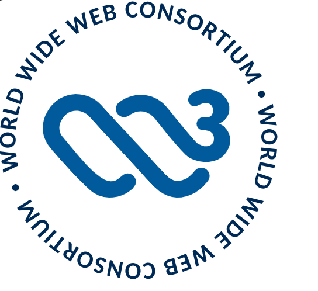
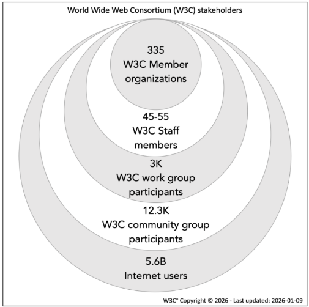

World Wide Web Consortium (W3C)
About W3C

The World Wide Web Consortium (W3C) is an international public-interest non-profit organization where Member organizations, a full-time staff, and the public work together to develop web standards. Founded by Web inventor Tim Berners-Lee and led by President & CEO and a Board of Directors, the Web Consortium's mission is to make the web work — for everyone.
Tables of contents
Use these links to go directly to the content:
W3C's History
In 1989, Sir Tim Berners-Lee invented the World Wide Web (see the original proposal). He coined the term "World Wide Web," wrote the first World Wide Web server,
"httpd," and the first client program (a browser and editor), "WorldWideWeb," in October 1990.
He wrote the first version of the "HyperText Markup Language" (HTML),
the document formatting language with the capability for hypertext links that became the primary publishing format for the Web.
His initial specifications for URIs, HTTP, and HTML were refined and discussed in larger circles as Web technology spread.
In October 1994, Sir Tim Berners-Lee founded the World Wide Web Consortium (W3C) at the Massachusetts Institute of Technology,
Laboratory for Computer Science [MIT/LCS] in collaboration with CERN, where the Web originated (see information on the original CERN Server),
with support from DARPA and the European Commission. In April 1995, Inria (Institut National de Recherche en Informatique et Automatique)
became the first European W3C host, followed by Keio University of Japan (Shonan Fujisawa Campus) in Asia in 1996. In 2003,
ERCIM (European Research Consortium in Informatics and Mathematics) took over the role of European W3C Host from INRIA. In 2013, W3C announced Beihang University as the fourth Host.
The four partnered administratively in a Hosted model to manage W3C Members and provide employment of the global W3C staff working under the direction of W3C’s management.
The World Wide Web Consortium began the year 2023 by forming a new public-interest non-profit organization.
The new mission-driven entity preserves our member-oriented approach, existing worldwide outreach and cooperation while allowing for additional partners around the world beyond Europe and Asia. The new organization also preserves the core process and mission of the Consortium to shepherd the web, by developing open web standards as a single global organization with contributions from W3C Members, staff, and the international community.
"Today I am proud of the profound impact W3C has had, its many achievements accomplished with our Members and the public, and I look forward to the continued empowering enhancements W3C enables as it launches its own public-interest non-profit organization, building on 28 years of experience."
Sir Tim Berners-Lee, Web Inventor and Founder of W3C, 31 January 2023
Vannevar Bush writes an article in Atlantic Monthly about a photo-electrical-mechanical device called a Memex, for memory extension, which could make and follow links between documents on microfiche
1960s
Doug Engelbart prototypes an "oNLine System" (NLS) which does hypertext browsing editing, email, and so on. He invents the mouse for this purpose. See the Bootstrap Institute library.
Ted Nelson coins the word Hypertext in A File Structure for the Complex, the Changing, and the Indeterminate. 20th National Conference, New York, Association for Computing Machinery, 1965. See also: Literary Machines. Note: There used to be a link here to "Hypertext and Hypermedia: A Selected Bibliography" by Terence Harpold, but the site hosting the resource did not maintain the link.
Andy van Dam and others build the Hypertext Editing System and FRESS in 1967.
1980
While consulting for CERN June-December of 1980, Tim Berners-Lee writes a notebook program, "Enquire-Within-Upon-Everything", which allows links to be made between arbitrary nodes. Each node had a title, a type, and a list of bidirectional typed links. "ENQUIRE" ran on Norsk Data machines under SINTRAN-III. See: Enquire user manual as scanned images or as HTML page(alt).
1989
March
"Information Management: A Proposal" written by Tim BL and circulated for comments at CERN (TBL). Paper "HyperText and CERN" produced as background (text or WriteNow format).
1990
May
Same proposal recirculated
September
Mike Sendall, Tim's boss, Oks the purchase of a NeXT cube, and allows Tim to go ahead and write a global hypertext system.
October
Tim starts work on a hypertext GUI browser+editor using the NeXTStep development environment. He makes up "WorldWideWeb" as a name for the program. (See the first browser screenshot) "World Wide Web" as a name for the project (over Information Mesh, Mine of Information, and Information Mine).
Project original proposal reformulated with encouragement from CN and ECP divisional management. Robert Cailliau (ECP) joins and is co-author of new version.
November
Initial WorldWideWeb program development continues on the NeXT (TBL) . This was a "what you see is what you get" (wysiwyg) browser/editor with direct inline creation of links. The first web server was nxoc01.cern.ch, later called info.cern.ch, and the first web page http://nxoc01.cern.ch/hypertext/WWW/TheProject.html Unfortunately CERN no longer supports the historical site. Note from this era too, the least recently modified web page we know of, last changed Tue, 13 Nov 1990 15:17:00 GMT (though the URI changed.)
November
Technical Student Nicola Pellow (CN) joins and starts work on the line-mode browser. Bernd Pollermann (CN) helps get interface to CERNVM "FIND" index running. TBL gives a colloquium on hypertext in general.
Christmas
Line mode browser and WorldWideWeb browser/editor demonstrable. Acces is possible to hypertext files, CERNVM "FIND", and Internet news articles.
W3C's Community

W3C's global standards constitute the toolkit for web solutions that scale, enabling innovators to solve hard problems, providing the proper foundations to meet requirements for accessibility, internationalization, privacy, and security on the web.
Standards that meet the varied needs of society are created not by one company but through the work of the Web Consortium community:
Members: More than 330 Members from around the world lead the development and implementation of standards.W3C Members show their support for standards and for W3C through a variety of means, including participation in groups, sponsorship of events, chairing groups, and implementing specifications. This page lists testimonials from Members that give a view into the broad range of organizations leading the development of Web Standards.
Staff: W3C is a public-interest non-profit organization whose revenues come primarily from Membership dues. The W3C Team is composed of 50 people of mixed gender, age and race who come from 14 different regions across the globe. With a truly international flavor, the W3C Team operates primarily remotely and includes engineers and experts who work from more than 10 different countries.
Read more about the W3C's functional internal organization.
See group photos we took over the years.
These and some grants support a staff of about 50 people who are direct employees or employees of W3C Partners.
Developers: Over 14,700 developers worldwide participate in the standards development.
The public-interest non-profit corporation relies on cooperation with Partners who help ensure global participation in the World Wide Web Consortium to help fulfill its mission and support W3C's global footprint. They do so by employing W3C Team members world-wide, but also by participating in research projects, and supporting W3C Members in their geography.
A Partner ensures W3C's global presence by providing significant support to W3C to fulfill its mission, leading W3C activities, and facilitating W3C membership engagement in a given geography, and enhances the bridging and harmonization between each Partner's geographical web community in that global web community.
W3C's standard development process
The proven standards development process upheld at the Web Consortium promotes fairness and enables progress.
Our standards work is accomplished in the open, under the W3C Process Document and royalty-free W3C Patent Policy, with input from the broader community.
Decisions are taken by consensus. Technical direction and standards (W3C Recommendations) require review by W3C Members – large and small.
The Advisory Board guides the community-driven enhancement of the Process Document. The Technical Architecture Group is our highest authority on technical matters.
W3C conducts its work primarily in English. Organizations located all over the world and involved in many different fields join W3C as Members to participate in a vendor-neutral forum for the creation of web standards. W3C Members and a dedicated full-time staff of experts have earned W3C international recognition for contributions to the web. W3C's global efforts include:
- Liaisons with national, regional and international organizations around the globe. These contacts help W3C maintain a culture of global participation in the development of the World Wide Web. W3C coordinates particularly closely with other organizations that are developing standards for the web or internet in order to enable clear progress.
- The W3C Chapters Program, which promotes adoption of W3C Recommendations among developers, application builders, and standards setters, and encourage inclusions of stakeholder organizations in the creation of future standards by joining W3C.
- Translations of web standards and other materials from dedicated volunteers in the W3C community. W3C also has a policy for authorized translations of W3C materials. Authorized W3C Translations can be used for official purposes in languages other than English.
- Talks around the world in a variety of languages on web standards by people closely involved in the creation of the standards.
- W3C's Internationalization activity helps ensure that the web is available to people.
W3C's Recognition
In orchestrating these activities, the Web Consortium has earned a reputation for fairness, quality, and efficiency. Though not well-known by the general public, the Web Consortium has earned recognition for its global impact: the Boston Globe ranked W3C the most important achievement associated with MIT (the first W3C historical Host). The Web Consortium's impact even extends beyond this planet: NASA regularly uses W3C standards in Mars and space exploration missions. The organization has won three Emmy Awards: in 2016 for its work to make online videos more accessible with captions and subtitles, in 2019 for standardization of a Full TV Experience on the web, and again in 2022 for standardizing font technology for custom downloadable fonts and typography for web and TV devices.
Web Authentication: An API for accessing Public Key Credentials Level 3 is now a W3C Recommendation
The Web Authentication Working Group is pleased to publish Web Authentication: An API for accessing Public Key Credentials Level 3 as a W3C Recommendation. This specification defines an API enabling the creation and use of strong, attested, scoped, public key-based credentials by web applications, for the purpose of strongly authenticating users. Conceptually, one or more public key credentials, each scoped to a given WebAuthn Relying Party, are created by and bound to authenticators as requested by the web application. The user agent mediates access to authenticators and their public key credentials in order to preserve user privacy. Authenticators are responsible for ensuring that no operation is performed without user consent. Authenticators provide cryptographic proof of their properties to Relying Parties via attestation. This specification also describes the functional model for WebAuthn conformant authenticators, including their signature and attestation functionality. Level 3 is the successor to Web Authentication Level 2. New features will be developed in Level 4.
Patent Advisory Group recommends continuing work on Open Screen Application Protocol
The Second Screen Working Group Patent Advisory Group (PAG), launched in September 2025, has published a report recommending that W3C continue work on the Open Screen Application Protocol. W3C launches a PAG to resolve issues in the event a patent has been disclosed that may be essential, but is not available under the W3C Royalty-Free licensing terms.
Group Note Draft: Web Sustainability Guidelines (WSG) Impact Ratings
The Sustainable Web Interest Group has published the first draft of a Group Note titled Web Sustainability Guidelines (WSG) Impact Ratings. The Web Sustainability Guidelines (WSG ) Impact Measurement resource defines a framework for assessing the impact of WSG guidelines across three categories: people, planet, and prosperity. Each guideline is assigned an impact rating (indeterminate, low, medium, or high) and a timeframe (short, medium, or long) indicating when the impact is expected to be observed. These inputs are used to calculate an impact score for each guideline. The score helps organisations compare guidelines and prioritise actions based on relative impact and timeframe. Higher scores indicate higher impact achieved over a shorter timeframe. The resulting scores are included in the resource. Where quantitative measurement is not possible, ratings are based on available research and expert input. Each guideline includes a rationale for its ratings and timeframe, and where appropriate, suggested metrics to support evaluation.
stroke-width="2" stroke-linecap="round" stroke-linejoin="round" aria-hidden="true">
W3C's Organizational structure
In administrative terms W3C has become its own legal entity in January 2023, moving to a public-interest non-profit organization after 28 years with an atypical organizational structure where legal and fiduciary roles were assumed by four host institutions across the planet. Read more about the W3C history.
In process terms, the W3C Process Document, Member Agreement, Patent Policy, and a few others documents establish the roles and responsibilities of the parties involved in the making of W3C standards.
The Process governs the standards-setting aspect of W3C. The Bylaws govern the operation of the corporation that supports the standards process and W3C’s other efforts to pursue its mission.
The World Wide Web Consortium began the year 2023 by forming a new public-interest non-profit organization. The new entity preserves our member-driven approach, existing worldwide outreach and cooperation while allowing for additional partners around the world beyond Europe and Asia. The new organization also preserves the core process and mission of the Consortium to shepherd the web, by developing open web standards as a single global organization with contributions from W3C Members, staff, and the international community.
Our Director, Tim Berners-Lee, noted: “Today, I am proud of the profound impact W3C has had, its many achievements accomplished with our Members and the public, and I look forward to the continued empowering enhancements W3C enables as it launches its own public-interest non-profit organization, building on 28 years of experience.”
Our vision for the future is a web that is truly a force for good. A World Wide Web that is truly international and more inclusive, more respectful of its users. A web that supports truth better than falsehood, people more than profits, humanity rather than hate. A web that works for everyone, because of everyone. To learn more read our press release.
Your sponsorship directly contributes to making the Web work — for everyone: a Web that reflects the principles of accessibility, internationalization, privacy and security which guide our technical work and community engagement, and support business ecosystem development.
The contributions from generous supporters, both individuals and organizations, who share our values, make a huge difference to our operations as a public-interest non-profit, and help us to achieve our vision. Your support allows W3C to accelerate delivering open web standards for the benefit of humanity by dedicating more resources to expand our core work.
W3C community engagement opportunities at a global, regional and local level bring sponsors into direct contact with leading Web technology experts from industry, research, government, and the developer community, to help your organization expand its outreach and be recognized in the community. Visibility for your brand will be tailored on marketing applications such as signage, conference and workshops merchandise, etc., as well as being recognized for specific deliverables.
W3C recognizes that giving takes many forms. We welcome inquiries to discuss how our work aligns with the aspirations and objectives described in the giving portfolios of individuals and family offices, philanthropic organizations and foundations, corporate social responsibility programs, government programs and others. W3C welcomes financial contributions of any size to help us carry out these activities.
We invite interested sponsors to discuss with our Team how to customize their support and outline specific elements they may be interested to support. Concrete examples include acknowledgement for sponsorship at W3C’s annual conference TPAC and W3C workshops (such as food and beverages, Internet connectivity, interpretation, captioning, sign language, merchandise such as t-shirts, bags, etc.) or support for the development of specific publications, tools, training materials, among other possibilities.